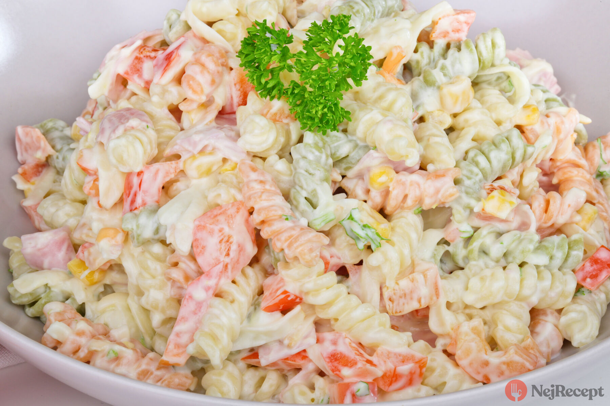

Lehký a chutný těstovinový salát s šunkou, sýrem a majonézou.
Těstoviny uvaříme obvyklým způsobem a necháme je vychladnout.
Šunku a sýr nakrájíme na malé kostičky. Papriku a jarní cibulku nebo pórek pokrájíme na tenké nudličky.
Vše dáme k vychladlým uvařeným těstovinám a promícháme.
Nakonec vše osolíme, opepříme a spojíme majonézou. Před podáváním řádně vychladíme.